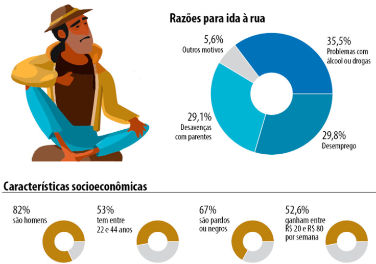
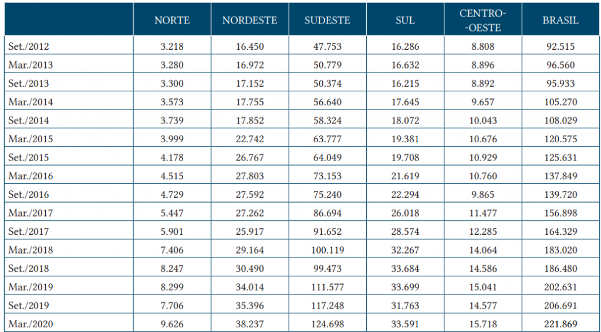
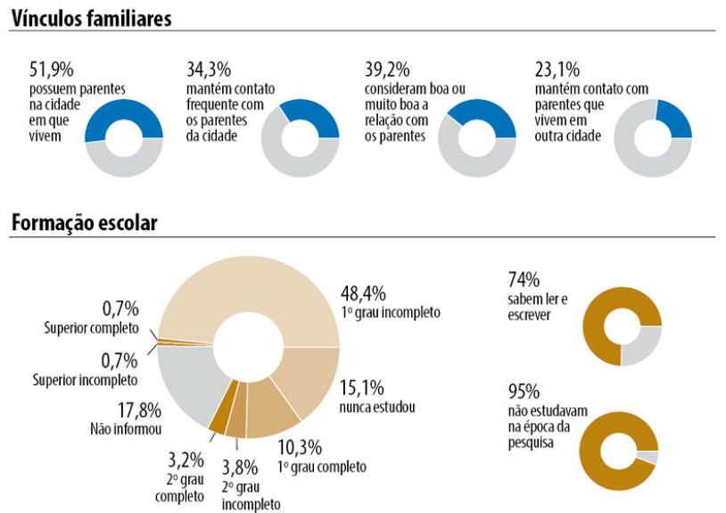
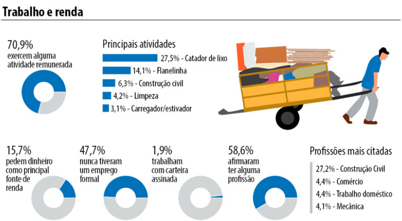
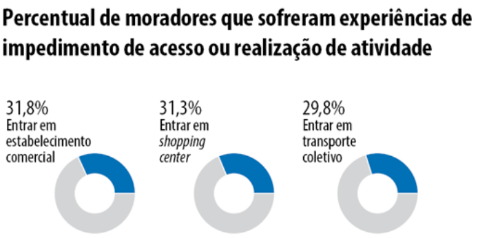
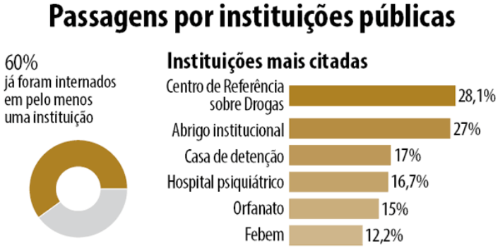

O QUE É A "SITUAÇÃO DE RUA"?
Pessoas que passam as noites dormindo nas ruas, sob marquises, em praças, embaixo de viadutos e pontes são consideradas pessoas em situação de rua. Além desses espaços, também são utilizados locais degradados, como prédios e casas abandonados e carcaças de veículos, que têm pouca ou nenhuma higiene.
Os "moradores de rua" são um grupo heterogêneo, isto é, pessoas que vêm de diferentes vivências e que estão nessa situação pelas mais variadas razões. Há fatores, porém, que os unem: a falta de uma moradia fixa, de um lugar para dormir temporária ou permanentemente e vínculos familiares que foram interrompidos ou fragilizados.
As características acima foram conceituadas em 2005 pelo Ministério do Desenvolvimento Social como os fatores intrínsecos à condição de rua e constam na Política Nacional para a População em Situação de Rua (decreto nº 7.053 de 2009).
QUAIS FATORES LEVAM À SITUAÇÃO DE RUA?
Uma Pesquisa Nacional sobre a População em Situação de Rua foi realizada pelo Ministério do Desenvolvimento Social entre os anos de 2007 e 2008 com o objetivo de quantificar e qualificar todos esses fatores. Quanto aos motivos que levam as pessoas a morar nas ruas, os maiores são: alcoolismo e/ou uso de drogas (35,5%), perda de emprego (29,8%) e conflitos familiares (29,1%). Das pessoas entrevistadas, 71,3% citaram ao menos um dos três motivos e muitas vezes os relatos citam motivos que se correlacionam dentro da perda de emprego, uso de drogas e conflitos familiares.

Apesar de não ser muito comum, existem pessoas que escolhem por viver nas ruas, também de acordo com a pesquisa. Embora os principais motivos sejam, por vezes, violências e abusos domésticos ou desentendimentos dentro da família, afirma-se que existe "um grau de escolha própria para ir para a rua". A explicação obtida na pesquisa é de que "essa escolha está relacionada a uma noção (ainda que vaga) de liberdade proporcionada pela rua, e acaba sendo um fator fundamental para explicar não apenas a saída de casa, mas também as razões da permanência na rua".
QUEM SÃO OS MORADORES DE RUA NO BRASIL?
É importante ressaltar um ponto: é bastante difícil quantificar o número de pessoas nessa situação do Brasil, pois a maioria dos censos leva em conta o local de moradia das pessoas e as que estão em condição de rua não têm essa constância, o que atrapalha a realização de pesquisas, contabilizações e afins.
 Fonte: IPEA – Estimativa da população em situação de rua no Brasil (SET 2012 – MAR 2020)PERFIL DA POPULAÇÃO EM SITUAÇÃO DE RUA NO BRASIL
Gênero: O primeiro ponto a ser ressaltado: a imensa maioria de quem vive nas ruas são homens. Do total dessa população, 82% é masculina. De toda a população masculina, a maioria é jovem: 15,3% são homens na faixa etária dos 18 aos 25 anos. A faixa da idade com o maior número de homens em situação de rua é a dos 26 aos 35 anos, com 27,1%.
Já a população feminina representa os outros 18% do total de pessoas que vivem em situação de rua. A maioria das mulheres também é jovem e está nas ruas com idade menor do que a dos homens: 21,17% delas têm entre 18 e 25 anos e 31,06% têm entre 26 e 35 anos.
Cor da pele: Quanto à cor de pele de todas as pessoas que vivem nas ruas, 39,1% se autodeclararam pardos na pesquisa; 29,5% se declararam brancos e 27,9% se declararam pretos. No censo do IBGE – que junta negros e pardos –, contabiliza a população brasileira em 53% de negros e 46% de brancos. Levando em conta a população em situação de rua, se formos usar o mesmo método, a representação negra é de 67% – bem mais alta que a sua representação na população brasileira.

 FONTE: Pesquisa Nacional sobre a População em Situação de Rua do Ministério do Desenvolvimento Social e Combate a fome.
PRINCIPAIS DISCRIMINAÇÕES SOFRIDAS
O Brasil registrou ao menos 17.386 casos de violência contra moradores de rua de 2015 a 2017, segundo o Ministério da Saúde. O número leva em conta os casos em que a motivação principal do ato violento era o fato de a pessoa estar em situação de rua.
Os jovens moradores de rua com idade entre 15 a 24 anos são o principal alvo da violência: 38% dos casos. A maioria das vítimas se declara negra (pretos ou pardos), grupo que concentra mais de 54% das notificações. Apesar de serem minoria nas ruas, as mulheres são as principais vítimas: 50,8% dos casos e 49,2% são homens.
 FONTE: Pesquisa Nacional sobre a População em Situação de Rua do Ministério do Desenvolvimento Social e Combate a fome.
A maioria das vítimas se declarou heterossexual (65%), seguida pelos homossexuais (2,9% dos casos) e bissexuais (0,4%). No entanto, em 21% dos registros a orientação sexual não foi informada.
Em 90,5% das notificações a identidade de gênero da vítima não foi detalhada. Apesar disso, 4,7% das vítimas se declararam mulheres transexuais, 3,1% homens transexuais e 1,7% travestis.
SERVIÇOS DE ASSISTÊNCIA SOCIAL PARA PESSOAS EM SITUAÇÃO DE RUA.
Na política de assistência social há equipamentos destinados a esse público, como os CREAs (Centros de Referência Especializado de Assistência Social) e os CentroPop (Centros de Referência Especializado para a População em situação de Rua).
Os equipamentos são espaços físicos, normalmente ligados a secretaria de assistência social do município ou estado, que estão aptos a receber, acolher e a ajudar as pessoas que se encontram em situação de rua.
Existem hoje no Brasil, 2.109 CREAS, sendo 2075 de municipais e 52 regionais.
 FONTE: Pesquisa Nacional sobre a População em Situação de Rua do Ministério do Desenvolvimento Social e Combate a fome.